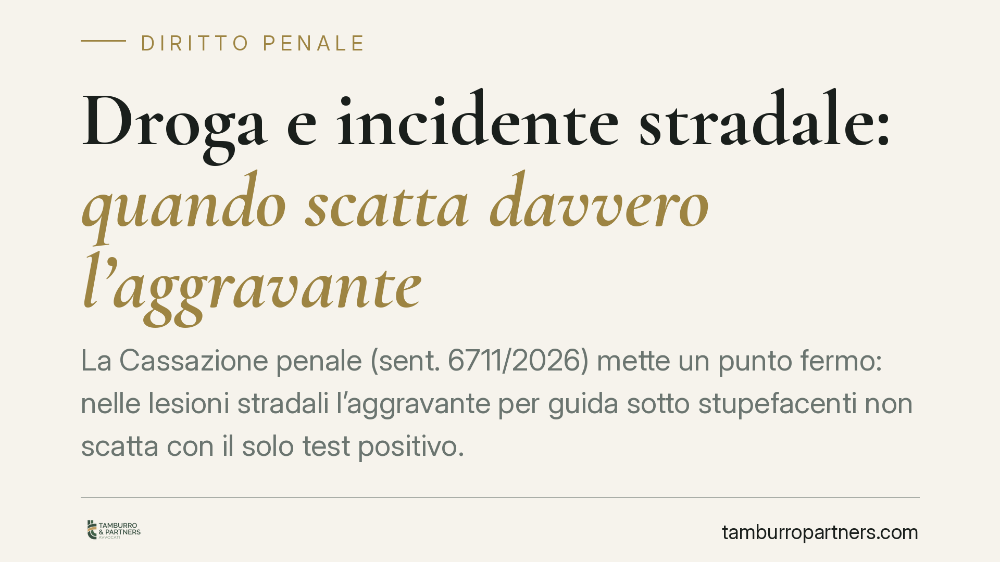

Droga e incidente stradale: quando scatta davvero l'aggravante
La Cassazione penale (sent. 6711/2026) mette un punto fermo: nelle lesioni stradali l'aggravante per guida sotto stupefacenti non scatta con il solo test positivo. Servono indici sintomatici di alterazione psicofisica accertati sul posto. La pronuncia interessa chiunque sia coinvolto in un sinistro dopo un controllo antidroga e chiarisce anche il regime di nullità legato all'avviso al difensore.

Il fatto
La questione nasce da un procedimento per lesioni personali stradali gravi. Al conducente era stata contestata l'aggravante prevista dall'art. 590 bis del codice penale, sul presupposto che si fosse messo alla guida sotto l'effetto di sostanze stupefacenti. La prova? Un esito positivo agli accertamenti tossicologici.
La Cassazione ha annullato la decisione impugnata, chiarendo che quell'esito, da solo, non basta a sostenere l'aggravante.
Inquadramento normativo
L'art. 590 bis cod. pen. punisce le lesioni personali stradali e prevede un forte aumento di pena quando il fatto è commesso da chi guida in stato di alterazione psicofisica da sostanze stupefacenti. Il richiamo tecnico è all'art. 187 del Codice della strada, che disciplina proprio la guida sotto l'effetto di droghe.
Qui sta il nodo. L'art. 187 non punisce la mera presenza di sostanze nell'organismo, ma lo stato di alterazione: cioè la concreta compromissione delle capacità psicofisiche del conducente al momento della guida. Le sostanze stupefacenti, a differenza dell'alcol, possono lasciare tracce biologiche per giorni o settimane dopo l'assunzione. Un test positivo, quindi, può segnalare un consumo pregresso ma non necessariamente uno stato di alterazione attuale.
Da questa distinzione la Corte trae la conseguenza pratica: per l'aggravante servono indici sintomatici di alterazione, rilevati dagli operanti al momento del controllo. Comportamento, eloquio, reazioni, coordinazione, stato delle pupille: elementi che, uniti all'esito tossicologico, ricostruiscono l'effettiva condizione del conducente.
La questione della nullità
La sentenza affronta anche un profilo processuale rilevante: il mancato avviso al difensore in occasione degli accertamenti. La Corte inquadra il vizio nel regime della nullità a regime intermedio.
Significa che non si tratta di una nullità assoluta, rilevabile in ogni stato e grado, ma di un vizio che deve essere eccepito entro precisi termini processuali. Se la parte interessata non solleva l'eccezione nei tempi previsti dal codice, la nullità si considera sanata e non può più essere fatta valere.
È una precisazione che sposta molto sul piano della tempestività della difesa: un diritto non esercitato nei termini corretti rischia di andare perduto.
Implicazioni pratiche
Per chi è coinvolto in un sinistro dopo un controllo antidroga, la pronuncia ridisegna il terreno di gioco.
Sul piano sostanziale, la difesa non deve limitarsi a contestare la validità del test. Il fronte decisivo è un altro: la reale sussistenza dello stato di alterazione al momento del fatto. In assenza di indici sintomatici verbalizzati dagli agenti, la contestazione dell'aggravante diventa fragile.
Sul piano procedurale, il regime di nullità intermedia impone attenzione ai tempi. L'eventuale vizio legato all'avviso al difensore va individuato e sollevato subito, prima che i termini processuali lo rendano irrilevante.
Per gli operanti, la pronuncia conferma l'importanza di una verbalizzazione accurata dello stato del conducente: annotazioni generiche o assenti indeboliscono l'accusa.
Cosa fare in concreto
- Recuperare subito il verbale degli accertamenti e verificare se contenga la descrizione di indici sintomatici di alterazione, non il solo esito del test.
- Controllare la tempistica dell'avviso al difensore e valutare eventuali vizi procedurali prima della scadenza dei termini per eccepirli.
- Conservare ogni documentazione sanitaria utile a ricostruire modalità e tempi degli accertamenti tossicologici.
- Rivolgersi tempestivamente a un difensore: nel regime di nullità intermedia i termini per far valere i vizi sono stringenti.
- Distinguere consumo da alterazione: impostare la strategia difensiva sulla condizione effettiva al momento della guida, non sulla mera positività.
Una nota di sintesi
La decisione riporta l'attenzione su un principio spesso trascurato: nel diritto penale della circolazione stradale ciò che conta è lo stato del conducente al momento del fatto, non un dato di laboratorio isolato. È una precisazione che rafforza le garanzie difensive, ma che richiede tempestività e precisione tecnica per essere sfruttata.
---
*Contributo informativo a cura di Tamburro & Partners - Avv. Giuseppe Tamburro. Non costituisce parere legale.*
Ogni condominio ha una storia a sé.
Se gestisci un'amministrazione e vuoi un confronto su una specifica questione condominiale, scrivi allo studio. Ti rispondiamo entro un giorno lavorativo.